Lula × Flávio sob a PNAD
O 40 × 42 publicado se estreita. Trocar apenas a renda reduz a diferença de 2 para 0,74 ponto.
Quaest / Globo · setembro de 2026
Flávio chega a 42% contra 40% de Lula. Sob a mesma régua de renda usada no acervo, o confronto fica em 41,40% contra 40,66%. O avanço de Flávio convive com rejeição estável e menor convicção na sua base. Duas ondas completas, transferências medidas, o inventário do questionário e a cobrança que os documentos sustentam.
01 · Veredito
A renda é a primeira prova. A transferência é a segunda. A terceira é o que a própria pesquisa ainda não permite concluir.
O 40 × 42 publicado se estreita. Trocar apenas a renda reduz a diferença de 2 para 0,74 ponto.
Com as bases dos finalistas retidas, Flávio recebe 11 pontos e Lula 4. Quatro origens menores têm transferência publicada.
Seu voto de 1º turno sobe de 29 para 31, mas a proporção que diz ter escolha definitiva diminui. Lula permanece em 80.
Inventário integral: resultado no PDF, divulgação externa, cadastro/controle e resultado não localizado são estados diferentes.
02 · Renda
A mesma regra aplicada aos outros institutos favorece Lula nesta Quaest. A régua tem de sobreviver ao resultado de que o analista gosta.
| Faixa | Quaest % | PNAD % | Lula | Flávio | B/N/não vota | NS |
|---|---|---|---|---|---|---|
| Até 2 SM | 31,00 | 35,19 | 51 | 32 | 12 | 5 |
| Mais de 2 a 5 SM | 42,00 | 39,26 | 36 | 46 | 13 | 5 |
| Mais de 5 SM | 27,00 | 25,55 | 34 | 47 | 14 | 5 |
A Quaest dá 31% de peso à faixa até dois salários mínimos. A referência Arvor dá 35,19%. Nesse grupo, Lula tem 51% contra 32%. A substituição aumenta o peso de um segmento em que Lula vai melhor e reduz o peso dos outros dois. O sentido da conta é previsível; seu tamanho precisa ser calculado.
Diferença Lula menos Flávio: −2 pontos.
Diferença: −0,74 ponto. Branco/nulo/não vota 12,94%; indecisos 5%.
Publicado: 36 × 31. Diferença passa de +5 para +6,09 pontos.
A fonte deixou de ser parcial. O PDF confirma os mesmos votos por renda que o g1 havia divulgado e o perfil final 31/42/27. A atualização do agregador mantém o resultado anterior do segundo turno e acrescenta o primeiro. Não se reutilizou o cruzamento de 7/9 na rodada de 14/9.
| Faixa | Lula | Flávio | Cury | Outros | NS | B/N |
|---|---|---|---|---|---|---|
| Até 2 SM | 45 | 22 | 7 | 7 | 12 | 8 |
| 2 a 5 SM | 33 | 34 | 7 | 10 | 10 | 7 |
| Mais de 5 SM | 31 | 38 | 8 | 9 | 7 | 7 |
Percentuais impressos na p.22. Somas 101, 101 e 100; arredondamentos preservados. Na p.16, os 9% de outros são Renan 4, Caiado 4 e Zema 1; Clariana, Edmilson, Hertz, Rui, Samara e Grassi aparecem com 0% arredondado.
03 · Método de renda
Sensibilidade não é voto corrigido. O cálculo conserva a âncora publicada e muda apenas a composição por renda.
| Cenário | Lula 1T | Flávio 1T | Lula 2T | Flávio 2T | L − F no 2T |
|---|---|---|---|---|---|
| Pessoas 16+, efetivo: principal | 36,53 | 30,44 | 40,66 | 41,40 | -0,74 |
| Pessoas 16+, habitual | 36,51 | 30,45 | 40,62 | 41,44 | -0,81 |
| Domicílios, efetivo: universo alternativo | 37,51 | 29,38 | 41,86 | 40,31 | 1,55 |
O universo principal conta pessoas de 16 anos ou mais, ponderadas por V1032, na PNADC anual 2025, visita 1. A renda efetiva é VD5001; a variante habitual usa VD5007. Domicílios entram apenas como teste: dar um voto a cada casa altera o universo, e não substitui um eleitor por um domicílio. Essa variante inverte o sinal, o que reforça a necessidade de declarar o denominador.
As faixas são renda total do domicílio, não per capita e não apenas renda do trabalho. O cartão usa R$ 3.242 e R$ 8.105, dois e cinco salários de R$ 1.621. O histograma de referência está em reais de abril de 2026; o motor consulta o IPCA disponível para converter o corte. A última competência disponível nesta reprodução é 202607; depois dela, o motor mantém o último índice conhecido, sem inventar inflação.
| Turno | Publicado L / F | Recomposto por renda | Recomposto por sexo |
|---|---|---|---|
| 1T | 36,00 / 31,00 | 36,18 / 31,36 | 36,06 / 30,88 |
| 2T | 40,00 / 42,00 | 40,11 / 41,93 | 39,59 / 42,23 |
Sexo usa 53% de mulheres e 47% de homens, p.196. Os resíduos dos finalistas são menores que meio ponto nas duas provas. No primeiro turno, duas linhas de renda somam 101%; preservamos os números impressos. A soma do resultado ajustado pode, por isso, diferir ligeiramente de 100%. Não escondemos o arredondamento em uma categoria residual.
Crítica que cabe: a documentação precisa permitir reproduzir os 31/42/27 a partir da PNAD declarada. Crítica que não cabe: dizer que esta onda usa PNAD 2024. O relatório e o registro citam PNAD anual 2025, visita 1. A diferença pode envolver universo, variável, preços, tratamento da não resposta e calibração conjunta; os agregados publicados não identificam qual combinação foi usada.
Quaest, 14/09: p.2, p.3, p.19, p.22, p.30, p.33, p.196, p.199.
04 · Histórico
Desde julho, o segundo turno sai de Lula 45 × Flávio 37 para 40 × 42: dez pontos de mudança na diferença, distribuídos entre queda de um e alta do outro.
| Divulgação | Lula publicado | Flávio publicado | Lula PNAD | Flávio PNAD | L − F PNAD |
|---|---|---|---|---|---|
| 2026-05-13 | 42,00 | 41,00 | 42,20 | 40,76 | 1,43 |
| 2026-06-10 | 44,00 | 38,00 | 44,57 | 37,55 | 7,02 |
| 2026-07-15 | 45,00 | 37,00 | 45,50 | 36,52 | 8,98 |
| 2026-08-05 | 44,00 | 39,00 | 44,62 | 38,44 | 6,18 |
| 2026-08-14 | 43,00 | 40,00 | 43,90 | 39,26 | 4,64 |
| 2026-09-02 | 42,00 | 41,00 | 42,56 | 40,26 | 2,30 |
| 2026-09-07 | 41,00 | 41,00 | 41,59 | 40,30 | 1,29 |
| 2026-09-14 | 40,00 | 42,00 | 40,66 | 41,40 | -0,74 |
A régua comum de renda preserva o estreitamento ao longo das ondas disponíveis. De 7 para 14/9, a distância publicada passa de zero a −2 pontos; a ajustada, de +1,29 a −0,74. O movimento semanal é pequeno diante da incerteza. A sequência é informativa; não transforma cada oscilação em mudança individual comprovada.
O histórico impresso já registra Lula 40 × Flávio 42 em abril. A expressão “primeira vez na campanha”, usada na cobertura da CNN com essa ressalva, se refere ao período iniciado em agosto. Não equivale a primeira vantagem numérica no ano.
| Cenário sem Marçal | Lula | Flávio | Cury | Outros | NS | B/N |
|---|---|---|---|---|---|---|
| 02/09 | 37 | 29 | 10 | 6 | 11 | 7 |
| 07/09 | 36 | 29 | 8 | 9 | 10 | 8 |
| 14/09 | 36 | 31 | 7 | 9 | 10 | 7 |
O PDF de 7/9 publica o cenário com Marçal nas pp.16–22 e o sem Marçal na p.27. O PDF de 14/9 chama o cenário sem Marçal de “cenário 1” e repete a série equivalente. Isso explica por que o histórico acima tem 10% de indecisos em 7/9, enquanto o registro anterior do agregador, com Marçal, tem 9%. Não é revisão arbitrária de um número.
05 · Transferência
O Sankey preserva a medição da Quaest e fixa as bases de Lula e Flávio integralmente no próprio candidato. Só indecisos e branco/nulo do primeiro turno são ajustados pelo modelo.
| Origem | Peso no 1T | → Lula % | → Flávio % | → NS % | → B/N % |
|---|---|---|---|---|---|
| Cury | 7 | 25 | 41 | 7 | 27 |
| Renan | 4 | 18 | 50 | 6 | 26 |
| Caiado | 4 | 20 | 46 | 2 | 32 |
| Zema | 1 | 38 | 32 | 0 | 30 |
A matriz publicada cobre Cury, Renan, Caiado e Zema, que juntos somam 16 pontos no primeiro turno. Aplicados os cruzamentos, eles entregam 3,65 pontos a Lula e 7,03 a Flávio; 0,81 fica indeciso e 4,51 vai para branco/nulo/não voto. É transferência entre respostas de cenários na mesma entrevista, não movimento temporal já realizado.
As bases L36 e F31 ficam 100% fiéis por hipótese estrutural explícita. Não há fita de Lula ou Flávio para branco, nulo, indecisão ou adversário. A Quaest não publicou essas duas linhas na p.27; o desenho não transforma essa ausência em medição de fidelidade perfeita.
Depois dos seis blocos fixos, os 17 pontos de indecisos e não voto do primeiro turno precisam preencher 0,35 ponto de Lula, 3,97 de Flávio, 4,19 de indecisão e 8,49 de não voto. O IPF/RAS fecha essas margens, partindo de uma distribuição declarada no JSON que preserva mais não voto em quem já não escolhia. Outra prior muda o corte entre essas duas origens, mas não seus totais de chegada. A PNAD não foi aplicada a cada fita: falta o cruzamento conjunto de primeiro turno, segundo turno e renda. Este Sankey fecha os placares publicados.
| Origem | Lula | Flávio | NS | B/N | Natureza |
|---|---|---|---|---|---|
| Lula | 36,00 | 0,00 | 0,00 | 0,00 | hipotese |
| Flávio | 0,00 | 31,00 | 0,00 | 0,00 | hipotese |
| Cury | 1,75 | 2,87 | 0,49 | 1,89 | medido |
| Renan | 0,72 | 2,00 | 0,24 | 1,04 | medido |
| Caiado | 0,80 | 1,84 | 0,08 | 1,28 | medido |
| Zema | 0,38 | 0,32 | 0,00 | 0,30 | medido |
| Indecisos | 0,31 | 3,54 | 3,36 | 2,79 | estimado |
| B/N/não vota | 0,04 | 0,43 | 0,83 | 5,70 | estimado |
06 · Voto útil
Flávio cresce dois pontos no primeiro turno e um no segundo. A redução da distância entre seus dois resultados combina consolidação com alteração do confronto direto.
| Medida | 07/09 | 14/09 | Variação |
|---|---|---|---|
| Flávio 1º turno sem Marçal | 29 | 31 | +2 |
| Flávio 2º turno | 41 | 42 | +1 |
| Distância 2T − 1T | 12 | 11 | −1 |
| Cury + Renan + Caiado + Zema no 1T | 16 | 16 | 0 |
Os quatro candidatos menores tinham 8 + 3 + 3 + 2 = 16 pontos; agora têm 7 + 4 + 4 + 1 = 16. Logo, a alta de Flávio não pode ser descrita simplesmente como esvaziamento líquido desse conjunto. Dentro dele, Cury e Zema recuam, enquanto Renan e Caiado avançam. Margens iguais podem esconder trocas em vários sentidos; a pesquisa não oferece painel longitudinal para rastreá-las.
Há uma pergunta direta na rodada anterior: 38% concordam totalmente e 10% parcialmente que o mais importante é votar em quem tem mais chance de derrotar o atual presidente. Os 48% medem uma disposição declarada diante de uma frase explicitamente anti-incumbente. Não medem 48% já convertidos para Flávio. Essa bateria não aparece no questionário de 14/9, portanto não temos uma nova leitura semanal da motivação.
Quaest, 07/09: p.164.
Contraponto medido: entre os eleitores de Zema, a p.27 mostra 38% para Lula e 32% para Flávio. Não se deve substituir essa linha por uma preferência ideológica do analista. Ao mesmo tempo, Zema tem só 1% no primeiro turno; a própria Quaest indica margem de 26 pontos para esse eleitorado no gráfico de definição da p.94. Esse recorte não sustenta uma ordenação estatística precisa.
07 · Adesão
O crescimento de Flávio vem acompanhado de uma base proporcionalmente mais aberta a mudar. Isso é consistente com a chegada de apoios menos consolidados; não prova a origem desses apoios.
| Indicador | Lula 7/9 | Lula 14/9 | Flávio 7/9 | Flávio 14/9 | Página |
|---|---|---|---|---|---|
| Espontânea | 28 | 28 | 20 | 23 | 6 |
| 1º turno sem Marçal | 36 | 36 | 29 | 31 | 17 |
| 2º turno | 41 | 40 | 41 | 42 | 28 |
| Conhece e poderia votar | 44 | 45 | 40 | 43 | 75 |
| Rejeição | 53 | 55 | 55 | 55 | 75 |
| Escolha definitiva entre seus eleitores | 80 | 80 | 78 | 72 | 94 |
A espontânea de Flávio sobe de 20 a 23 e a estimulada de 29 a 31. Sua distância entre reconhecimento espontâneo e escolha estimulada cai de nove para oito pontos. É sinal descritivo de presença maior na memória do eleitorado, sem permitir atribuir o efeito a uma peça, entrevista ou canal.
O potencial declarado cresce de 40 a 43, mas a rejeição fica em 55. Lula também chega a 55 de rejeição. A melhora de Flávio, portanto, não veio acompanhada de queda semanal da rejeição. “Poderia votar”, a redação do instrumento, tampouco é a mesma coisa que “votaria”, a abreviação usada em parte dos gráficos.
Uma conta exploratória multiplica voto pela certeza: Flávio tinha 29 × 78% = 22,62 pontos de escolha declarada definitiva e passa a 31 × 72% = 22,32. Lula tem 36 × 80% = 28,80. Isso não é piso garantido, e a comparação pressupõe que o cruzamento de definição corresponda à lista de candidatos publicada. O instrumento ainda roteia Q24 pelo cenário com Marçal; falta uma correspondência inequívoca entre variável registrada e gráfico renumerado.
Na p.85, 27% dizem poder mudar entre quem escolheu candidato. Usando os 83% de voto nominal do cenário publicado, a tradução aproximada é 83% × 27% + 10% de indecisos = 32,41% do eleitorado. Somar diretamente 27 + 10 produz 37 e mistura universos. A conta de 32,41 também depende da correspondência de cenários acima; não inclui automaticamente os 7% de branco/nulo. Abertura não é direção de migração.
08 · Substitutos
Cinco confrontos na mesma amostra permitem comparar nomes com recrutamento, momento e ponderação compartilhados. As respostas são condicionais aos cenários, não previsão de substituição na urna.
| Adversário | Lula pub. | Adversário pub. | Não escolha | Lula PNAD | Adversário PNAD | L − adversário PNAD |
|---|---|---|---|---|---|---|
| Flávio | 40 | 42 | 18 | 40,66 | 41,40 | -0,74 |
| Cury | 38 | 36 | 26 | 38,63 | 35,41 | 3,22 |
| Caiado | 41 | 39 | 20 | 41,60 | 38,21 | 3,39 |
| Renan | 41 | 38 | 21 | 41,60 | 37,30 | 4,30 |
| Zema | 45 | 33 | 22 | 45,69 | 32,16 | 13,53 |
Flávio marca 42, três acima de Caiado, quatro de Renan, seis de Cury e nove de Zema. Porém Lula não fica imóvel: varia de 38 contra Cury a 45 contra Zema. A troca do adversário altera tanto o desafiante quanto Lula e a não escolha. Não cabe importar automaticamente a tese de que toda a perda do substituto vira branco/nulo.
O contraponto que uma leitura favorável a Flávio precisa publicar: acima de cinco salários mínimos, Caiado marca 51, Renan 48 e Flávio 47. São estimativas pontuais; a diferença entre cenários na mesma amostra exige covariância individual para um teste adequado. Ainda assim, a tabela impede afirmar que Flávio domina todos os segmentos. Essa comparação descreve o levantamento, sem prescrever persuasão dirigida por renda.
Nas alternativas, a reponderação também mantém a âncora nacional. Os resíduos de recomposição ficam entre 0,11 e 0,68 ponto nos finalistas. Em Caiado, o resíduo de 0,68 recomenda cautela adicional com centésimos; eles servem à reprodução da conta, não representam precisão amostral.
Quaest, 14/09: p.28, p.33, p.37, p.42, p.46, p.51, p.55, p.60, p.64, p.69.
09 · Blocos
A pergunta sobre o melhor resultado separa quatro aspirações. Não é uma escala neutra de ideologia: as alternativas carregam nomes, experiência e o atributo positivo de moderação.
| Melhor resultado para o país | Peso | Lula 1T | Flávio 1T | Lula 2T | Flávio 2T | B/N 2T | NS 2T |
|---|---|---|---|---|---|---|---|
| Lula/PT vencer | 32 | 79 | 3 | 85 | 8 | 5 | 2 |
| Família Bolsonaro voltar | 25 | 4 | 81 | 3 | 93 | 2 | 2 |
| Moderado fora da polarização | 16 | 22 | 24 | 25 | 47 | 22 | 6 |
| Nome de fora da política | 19 | 18 | 26 | 24 | 39 | 29 | 8 |
Somados, moderado e outsider representam 35% do eleitorado. Nesses dois grupos, Flávio tem 24 e 26 no primeiro turno e 47 e 39 no segundo. Isso documenta adesão condicional a um confronto, não entusiasmo uniforme por uma restauração da família Bolsonaro. No grupo que deseja essa volta, seus resultados são 81 e 93. Os 8% sem resposta à pergunta de melhor resultado não têm coluna no cruzamento: não agregamos essas quatro colunas como se cobrissem o país inteiro.
O outro eixo, identificação política, distribui 19% lulistas, 14% esquerda não lulista, 32% independentes, 21% direita não bolsonarista e 12% bolsonaristas, mais 2% sem posição. Entre independentes, o segundo turno sai de Lula 28 × Flávio 32 para 26 × 36. É o movimento pontual publicado, com margem de quatro pontos no recorte; não identifica conversões individuais. Os dois eixos se sobrepõem e nunca devem ser somados.
10 · Governo
A aprovação está em 43%, a desaprovação em 50% e 7% não respondem. As três parcelas ficaram iguais às da semana anterior.
| Renda | Desaprova | Flávio 2T | Diferença | Não escolha 2T |
|---|---|---|---|---|
| Até 2 SM | 38 | 32 | 6 | 17 |
| 2 a 5 SM | 54 | 46 | 8 | 18 |
| Mais de 5 SM | 58 | 47 | 11 | 19 |
As três faixas formam uma partição de renda. A diferença ponderada entre desaprovação e voto em Flávio é 8,19 pontos; os placares nacionais arredondados dão 50 − 42 = 8. É um contraste útil entre duas medidas, mas não revela quem respondeu simultaneamente às duas perguntas de determinada maneira.
Correção de interpretação: esse contraste não é um estoque identificado, nem um teto de votos capturáveis. Com apenas 50% de desaprovação e 42% de voto, a fração que desaprova e não vota em Flávio pode estar entre 8% e 50%, pelos limites de interseção. Para estreitar o intervalo é necessário o cruzamento individual. Mesmo saber que há não escolha em uma faixa não prova que ela é dos mesmos entrevistados que desaprovam.
Para a leitura de campanha, o fato favorável é que o adversário enfrenta desaprovação maior que aprovação. O limite é que essa insatisfação pode coexistir com rejeição a Flávio, preferência por outro candidato ou recusa de votar. Não se deve prometer conversão a partir de uma subtração de percentuais.
11 · Agenda
A hierarquia de preocupações é espontânea. Ela oferece contexto para a disputa, mas não mede a competência atribuída a cada candidato para resolver esses problemas.
| Maior preocupação | 07/09 | 14/09 |
|---|---|---|
| Violência | 31 | 31 |
| Corrupção | 20 | 22 |
| Economia | 19 | 19 |
| Saúde | 12 | 10 |
| Problemas sociais | 9 | 9 |
| Educação | 7 | 7 |
O gráfico exibe as seis categorias mais citadas, e não uma partição completa: a coluna atual soma 98. Corrupção sobe dois pontos, mas a violência permanece nove pontos à frente. Reduzir toda a agenda ao escândalo da semana apagaria o principal problema espontaneamente mencionado.
| Indicador | Resultado atual |
|---|---|
| Assistiu a algum programa eleitoral | 42 |
| Não assistiu | 58 |
| Muito interessado na eleição | 37 |
| Pouco interessado | 40 |
| Nada interessado | 22 |
| Principal fonte: redes sociais | 35 |
| Principal fonte: televisão | 34 |
| Principal fonte: sites/blogs/portais | 10 |
A Q61 não pergunta qual programa foi visto, em que frequência ou se mudou o voto. Não há teste experimental de mensagem nem atribuição de efeito a um candidato. Assim, não é possível dizer que o horário eleitoral de Flávio “funcionou” apenas porque ele cresceu e 42% viram algum programa. Redes e TV também são fontes principais declaradas, não alcance acumulado ou eficácia de campanha. Os 62% pouco ou nada interessados mostram atenção limitada; não definem uma lista de pessoas persuadíveis.
12 · STF
A Q50 está fora do PDF eleitoral, mas foi publicada no g1 em 14/9. Ela entra na análise com a fonte externa identificada.
| Influência declarada da crise no STF | % |
|---|---|
| Não tem influência sobre o voto | 67 |
| Reforça a escolha atual | 22 |
| Faz considerar mudar | 7 |
| Não sabe/não respondeu | 4 |
Essas respostas não são um experimento. Perguntar se um caso influenciou alguém mede percepção retrospectiva, sujeita a racionalização. “Não influencia” não prova ausência de todo efeito; “faz considerar mudar” não informa a direção nem confirma que a mudança aconteceu. O resultado sustenta uma leitura de reforço declarado mais frequente que reconsideração, e não uma estimativa causal de votos produzidos pela crise.
O g1 também publicou confiança no STF e propostas institucionais: 56% dizem não confiar, 9% confiar muito e 30% confiar pouco; 53% apoiam mandato fixo e 68% maiores exigências de nomeação. Por isso, não chamamos esses itens de resultados escondidos. A crítica é à fragmentação entre o instrumento registrado, o PDF e matérias avulsas, sem uma tabela-mestra que amarre pergunta, base e resultado.
Fontes externas: g1, efeito declarado sobre o voto; g1, confiança e reformas. Consultadas em 15/09/2026.
A sequência do instrumento importa: os cenários de voto estão nas Q22–29; os textos sobre Master e o conflito no STF entram nas Q46–50. Não há base para afirmar que esse bloco posterior induziu as respostas de voto anteriores, supondo execução da ordem registrada. Já as respostas de conhecimento e avaliação do caso vêm depois de estímulos narrativos lidos pelo entrevistador. Elas não devem ser tratadas como opinião espontânea sem contexto.
13 · Perguntas fantasma
Há 66 itens numerados no questionário. Contamos cada nome e cenário numerado como item; a recodificação automática 3A não é uma pergunta adicional.
Itens com resultado identificável no PDF.
Compatível com Q23, mas o relatório a chama de cenário 1.
Incluem resultados divulgados à parte. Não são 25 provas de retenção.
Q1 elegibilidade, Q5 ocupação e Q7 gravação.
| Itens | Assunto | Situação documental | Localizador |
|---|---|---|---|
| Q9–21 | Potencial dos candidatos | 12 nomes no PDF; Marçal sem resultado próprio. | pp.74–83 |
| Q22–23 | Dois cenários de primeiro turno | Um conjunto de resultados, sem Marçal; identificação renumerada. | pp.16–25 |
| Q37–42 | Honestidade dos seis candidatos | Nenhum resultado localizado no PDF eleitoral. | Instrumento p.12 |
| Q43–45 | Confiança institucional | Fora do PDF; confiança no STF confirmada no g1. | Instrumento p.13 |
| Q46–50 | Master e conflito no STF | Fora do PDF; Q47 e Q50 confirmadas nas matérias consultadas. | Instrumento pp.13–15 |
| Q51–56 | Reformas do STF | Fora do PDF; divulgação externa de várias propostas confirmada. | Instrumento p.15 |
| Q58–59 | Conflitos familiares e expressão do voto | Sem resultado localizado no PDF. | Instrumento p.16 |
| Q65 | Voto recordado no segundo turno de 2022 | Sem resultado localizado no PDF. | Instrumento p.18 |
Para chamar uma pergunta de “fantasma”, é preciso dizer de qual acervo ela está ausente. O diagnóstico verificável aqui é ausência de resultado próprio neste PDF. Foram consultados também o catálogo de PDFs da Quaest e matérias públicas. A busca externa não é exaustiva: “não localizado” não significa “nunca divulgado”. Registro prova que o item estava previsto, não que foi efetivamente aplicado a todos.
A lacuna de maior valor para auditar recrutamento é a Q65: o voto recordado em 2022 pode ser comparado com o resultado eleitoral conhecido, embora sofra erro de memória e de declaração. Sua publicação por base bruta e ponderada ajudaria a avaliar composição. Não permitiria simplesmente forçar o passado recordado a coincidir com a urna.
A bateria de honestidade é pertinente justamente quando corrupção ganha espaço na agenda. Sem os seis resultados, as bases e a fração que não conhece o suficiente para avaliar, o PDF não permite testar se o tema favorece um candidato específico. Não substituímos essa falta por uma conclusão partidária.
| Q | Tema | Questionário | Estado | Relatório |
|---|---|---|---|---|
| 1 | Elegibilidade eleitoral | p.1 | Cadastro, perfil ocupacional ou controle; sem resultado próprio no PDF | Não consta |
| 2 | Sexo | p.2 | Resultado no PDF | Quaest, 14/09: p.196. |
| 3 | Idade | p.2 | Resultado no PDF | Quaest, 14/09: p.197. |
| 4 | Escolaridade | p.2 | Resultado no PDF | Quaest, 14/09: p.198. |
| 5 | Ocupação | p.2 | Cadastro, perfil ocupacional ou controle; sem resultado próprio no PDF | Não consta |
| 6 | Renda domiciliar | p.3 | Resultado no PDF | Quaest, 14/09: p.199. |
| 7 | Gravação e controle | p.3 | Cadastro, perfil ocupacional ou controle; sem resultado próprio no PDF | Não consta |
| 8 | Voto espontâneo | p.3 | Resultado no PDF | Quaest, 14/09: p.6. |
| 9 | Potencial: Clariana | p.3 | Resultado no PDF | Quaest, 14/09: p.75. |
| 10 | Potencial: Edmilson | p.3 | Resultado no PDF | Quaest, 14/09: p.75. |
| 11 | Potencial: Cury | p.3 | Resultado no PDF | Quaest, 14/09: p.75. |
| 12 | Potencial: Flávio | p.3 | Resultado no PDF | Quaest, 14/09: p.75. |
| 13 | Potencial: Hertz | p.3 | Resultado no PDF | Quaest, 14/09: p.75. |
| 14 | Potencial: Lula | p.3 | Resultado no PDF | Quaest, 14/09: p.75. |
| 15 | Potencial: Marçal | p.3 | Não localizado no PDF; divulgação externa não esgotada | Não consta |
| 16 | Potencial: Renan | p.5 | Resultado no PDF | Quaest, 14/09: p.75. |
| 17 | Potencial: Caiado | p.5 | Resultado no PDF | Quaest, 14/09: p.75. |
| 18 | Potencial: Rui | p.5 | Resultado no PDF | Quaest, 14/09: p.75. |
| 19 | Potencial: Samara | p.5 | Resultado no PDF | Quaest, 14/09: p.75. |
| 20 | Potencial: Grassi | p.5 | Resultado no PDF | Quaest, 14/09: p.75. |
| 21 | Potencial: Zema | p.5 | Resultado no PDF | Quaest, 14/09: p.75. |
| 22 | 1º turno com Marçal | p.6 | Cenário com Marçal sem resultado próprio no PDF | Não consta |
| 23 | 1º turno sem Marçal | p.6 | Lista compatível; renumerada como cenário 1 no PDF | Quaest, 14/09: p.16. |
| 24 | Voto definitivo ou mutável | p.7 | Resultado no PDF | Quaest, 14/09: p.85. |
| 25 | 2º turno: Cury | p.8 | Resultado no PDF | Quaest, 14/09: p.37. |
| 26 | 2º turno: Flávio | p.8 | Resultado no PDF | Quaest, 14/09: p.28. |
| 27 | 2º turno: Renan | p.8 | Resultado no PDF | Quaest, 14/09: p.55. |
| 28 | 2º turno: Caiado | p.8 | Resultado no PDF | Quaest, 14/09: p.46. |
| 29 | 2º turno: Zema | p.8 | Resultado no PDF | Quaest, 14/09: p.64. |
| 30 | Aprovação | p.8 | Resultado no PDF | Quaest, 14/09: p.154. |
| 31 | Avaliação | p.8 | Resultado no PDF | Quaest, 14/09: p.164. |
| 32 | Preocupação | p.9 | Resultado no PDF | Quaest, 14/09: p.174. |
| 33 | Interesse na eleição | p.9 | Resultado no PDF | Quaest, 14/09: p.133. |
| 34 | Melhor resultado | p.10 | Resultado no PDF | Quaest, 14/09: p.106. |
| 35 | Medo | p.10 | Resultado no PDF | Quaest, 14/09: p.96. |
| 36 | Expectativa de vencedor | p.10 | Resultado no PDF | Quaest, 14/09: p.122. |
| 37 | Honestidade: Lula | p.12 | Não localizado no PDF; divulgação externa não esgotada | Não consta |
| 38 | Honestidade: Flávio | p.12 | Não localizado no PDF; divulgação externa não esgotada | Não consta |
| 39 | Honestidade: Caiado | p.12 | Não localizado no PDF; divulgação externa não esgotada | Não consta |
| 40 | Honestidade: Zema | p.12 | Não localizado no PDF; divulgação externa não esgotada | Não consta |
| 41 | Honestidade: Renan | p.12 | Não localizado no PDF; divulgação externa não esgotada | Não consta |
| 42 | Honestidade: Cury | p.12 | Não localizado no PDF; divulgação externa não esgotada | Não consta |
| 43 | Confiança: STF | p.13 | Divulgado fora do PDF eleitoral | Não consta |
| 44 | Confiança: Presidência | p.13 | Não localizado no PDF; divulgação externa não esgotada | Não consta |
| 45 | Confiança: Congresso | p.13 | Não localizado no PDF; divulgação externa não esgotada | Não consta |
| 46 | Conhecimento: Master | p.13 | Não localizado no PDF; divulgação externa não esgotada | Não consta |
| 47 | Imagem afetada: Master | p.13 | Divulgado fora do PDF eleitoral | Não consta |
| 48 | Conhecimento: conflito no STF | p.14 | Não localizado no PDF; divulgação externa não esgotada | Não consta |
| 49 | Quem age corretamente no conflito | p.14 | Não localizado no PDF; divulgação externa não esgotada | Não consta |
| 50 | Efeito declarado da crise sobre o voto | p.14 | Divulgado fora do PDF eleitoral | Não consta |
| 51 | STF: mandato fixo | p.15 | Divulgado fora do PDF eleitoral | Não consta |
| 52 | STF: indicações por outros poderes | p.15 | Divulgado fora do PDF eleitoral | Não consta |
| 53 | STF: decisões individuais | p.15 | Não localizado no PDF; divulgação externa não esgotada | Não consta |
| 54 | STF: código de ética | p.15 | Divulgado fora do PDF eleitoral | Não consta |
| 55 | STF: requisitos de nomeação | p.15 | Divulgado fora do PDF eleitoral | Não consta |
| 56 | STF: quarentena política | p.15 | Não localizado no PDF; divulgação externa não esgotada | Não consta |
| 57 | Identificação política | p.16 | Resultado no PDF | Quaest, 14/09: p.194. |
| 58 | Discussões familiares em 2022 e 2026 | p.16 | Não localizado no PDF; divulgação externa não esgotada | Não consta |
| 59 | Liberdade para expressar o voto | p.16 | Não localizado no PDF; divulgação externa não esgotada | Não consta |
| 60 | Fonte de informação política | p.17 | Resultado no PDF | Quaest, 14/09: p.184. |
| 61 | Exposição ao horário eleitoral | p.17 | Resultado no PDF | Quaest, 14/09: p.144. |
| 62 | Religião | p.17 | Resultado no PDF | Quaest, 14/09: p.200. |
| 63 | Bolsa Família | p.17 | Resultado no PDF | Quaest, 14/09: p.203. |
| 64 | Cor/raça | p.17 | Resultado no PDF | Quaest, 14/09: p.202. |
| 65 | Voto recordado em 2022 | p.18 | Não localizado no PDF; divulgação externa não esgotada | Não consta |
| 66 | Comparecimento em 2024 | p.18 | Resultado no PDF | Quaest, 14/09: p.204. |
Baixar o inventário com os blocos do instrumento em JSON. Cada item preserva página, status e correspondência; a classificação pode ser atualizada quando aparecer nova publicação.
14 · Instrumento
A maior crítica ao questionário não exige adivinhar a intenção de quem o escreveu. Exige identificar o que cada formulação permite medir.
| Ponto | Evidência registrada | Consequência para a leitura |
|---|---|---|
| Potencial de voto | Q9–21: conhece e poderia votar; gráfico abrevia para conhece e votaria. | Disponibilidade hipotética não equivale a intenção de votar. |
| Melhor resultado | Q34 combina Lula/PT, família Bolsonaro, moderado e alguém de fora. | Nomes e atributos valorativos no mesmo conjunto; não é escala neutra de ideologia. |
| Medo | Q35 contrapõe novo governo Lula à volta da família Bolsonaro. Ambos/nenhum não são lidos. | A resposta pode depender da assimetria das alternativas e do esforço de oferecer uma resposta espontânea. |
| Conhecimento do caso | Q46 e Q48 vêm depois de textos sobre o assunto. | Pergunta-se se já sabia após apresentar informação; não é lembrança espontânea sem estímulo. |
| Identificação política | Q57 distingue lulista/esquerda não lulista e bolsonarista/direita não bolsonarista. | É mais detalhado que uma divisão binária, mas vem depois do bloco STF no instrumento. Sem experimento, priming é hipótese. |
| Roteamento de convicção | Q24 remete a cen1t_pres1, com Marçal no registro; gráfico atual mostra lista sem Marçal. | Falta informar qual variável condiciona o denominador e os cruzamentos da p.94. |
| Renda não declarada | Q6 prevê recusa, mas o perfil de três faixas fecha 100%. | Sem quantidade de recusas e regra de tratamento, não se reproduz a calibração inteira. |
A ordem dos nomes e dos cenários de segundo turno é aleatorizada no instrumento, um cuidado metodológico que merece crédito. Aleatorizar ordem ajuda contra efeitos de posição; não elimina diferenças de significado entre “moderado”, “família” e “partido”.
O instrumento de 7/9 tem 59 itens. Pergunta sobre economia nos últimos 12 meses, renda diante dos preços, dívidas e Desenrola (Q33–36); inclui sabatinas (Q40–41) e onze afirmações de motivação política (Q42–52). O de 14/9 tem 66 e acrescenta honestidade, confiança, Master, STF, reformas e convivência política. A economia sai como bateria própria; continua como opção espontânea de preocupação. Isso muda o que o levantamento permite diagnosticar, sem provar por si só intenção de favorecer alguém.
A medição de 48% que concordam com derrotar o atual presidente, na rodada anterior, pode iluminar o mecanismo de voto útil. Sua ausência como pergunta repetida impede afirmar que esse mecanismo se intensificou nesta semana. Uma manchete sobre a causa da alta precisaria dessa repetição ou de evidência mais forte.
Instrumento registrado BR-03607/2026: p.7, p.10, p.12, p.13, p.14, p.15, p.16.
15 · Território
Os dois anexos territoriais foram extraídos por programa e comparados pelo código IBGE de 15 dígitos. Nomes de bairro não foram usados como equivalentes de setor censitário.
Seis entrevistas por setor, total 2.004.
26 reaparecem; 94 saem e outros 94 entram.
330 novos setores: 98,80% de renovação.
29,94% das entrevistas ficam nos 26 municípios presentes nas duas ondas.
| Região | Entrevistas em 14/9 | Participação % |
|---|---|---|
| Centro-Oeste | 150 | 7,49 |
| Nordeste | 552 | 27,54 |
| Norte | 168 | 8,38 |
| Sudeste | 846 | 42,22 |
| Sul | 288 | 14,37 |
As quantidades por macrorregião são idênticas entre as duas ondas. Portanto, a mudança municipal não equivale a uma mudança do peso regional. Uma amostra repetida pode rotacionar unidades legitimamente; alta rotação não é evidência de manipulação. O que falta para reproduzir o sorteio é o cadastro de seleção, os estratos, as probabilidades e a regra de rotação.
Essa configuração também impede tratar os dois relatórios como se acompanhassem as mesmas pessoas. Mudanças semanais misturam movimento de opinião, composição de amostras distintas e ruído. O anexo fecha aritmeticamente; a auditoria atual verifica códigos, consistência de UF, contagens e repetição, sem afirmar validação cartográfica independente de cada setor no cadastro IBGE vigente.
Baixar os 668 registros territoriais das duas ondas. Os quatro setores repetidos e as contagens completas também estão no JSON analítico.
16 · Incerteza
A margem da diferença entre candidatos não é a mesma margem exibida ao lado de um percentual isolado.
| Medida | Diferença L − F | Margem 95% sob AAS | Intervalo ilustrativo |
|---|---|---|---|
| 2º turno publicado | −2,00 | ±3,96 | [-5,96; 1,96] |
| 1º turno publicado | +5,00 | ±3,58 | [1,42; 8,58] |
Para duas categorias mutuamente exclusivas, usamos 1,96 × √[(pL + pF − (pL − pF)²) / n], em proporções e depois convertido em pontos percentuais. A aproximação de amostragem aleatória simples é um diagnóstico, não o erro real do desenho domiciliar por conglomerados e cotas. O segundo turno já inclui zero nessa aproximação. No primeiro, cinco pontos superam a margem AAS, mas um efeito de desenho de aproximadamente 1,95 seria suficiente para o intervalo alcançar zero.
A variação semanal de Flávio, de 41 para 42 no segundo turno, tem margem ilustrativa de cerca de três pontos para a diferença entre duas amostras independentes de 2.004. A independência é uma aproximação, não uma característica demonstrada dos pesos. Um ponto não sustenta diagnóstico causal de sucesso de campanha.
O relatório publica margens por vários recortes, um mérito. Isso não substitui tamanhos brutos e efetivos das bases, covariância entre cenários ou erro do desenho. O gráfico de definição indica margens de 9 pontos para Cury, 12 para Caiado, 14 para Renan e 26 para Zema. Não atribuímos esses valores automaticamente à matriz de transferência, mas eles alertam para a fragilidade dos percentuais em candidaturas pequenas.
Não anexamos a margem publicada ao resultado PNAD como se ele fosse uma nova pesquisa. A sensibilidade altera pesos e incorpora incerteza do benchmark, arredondamento e diferenças de mensuração. Sem microdados e desenho, um intervalo formal para ela seria uma precisão inventada.
17 · Agregados
Primeiro turno acrescentado, segundo turno confirmado e fonte integral identificada no agregador Arvor. A referência de cálculo foi atualizada para 15/09/2026.
| Instituto | Fim do campo | L pub. | F pub. | L válidos | F válidos | L PNAD | F PNAD |
|---|---|---|---|---|---|---|---|
| Quaest | 2026-09-13 | 40,00 | 42,00 | 48,78 | 51,22 | 40,66 | 41,40 |
| Datafolha | 2026-09-10 | 46,00 | 44,00 | 51,11 | 48,89 | 42,41 | 47,89 |
| Nexus | 2026-09-13 | 47,00 | 46,00 | 50,54 | 49,46 | 46,69 | 46,40 |
Os percentuais totais devem ser lidos junto com a não escolha: Quaest tem 18% no segundo turno, contra 9% no Datafolha e 7% na Nexus. Por isso mostramos também válidos, normalizados somente entre os dois finalistas. Essa normalização retira a compressão mecânica provocada pela não escolha; não elimina diferenças de modo, seleção ou mensuração.
| Turno | Agregado | Institutos elegíveis | L pub. | F pub. | L PNAD | F PNAD |
|---|---|---|---|---|---|---|
| 2T | Média temporal (meia-vida 14 dias) | 7 | 44,26 | 44,02 | 43,37 | 44,95 |
| 2T | Última onda por instituto | 7 | 43,91 | 44,79 | 42,91 | 45,76 |
| 1T | Média temporal (meia-vida 14 dias) | 10 | 39,06 | 34,24 | 38,38 | 34,86 |
| 1T | Última onda por instituto | 10 | 38,83 | 34,83 | 37,83 | 35,56 |
A média ponderada usa todas as ondas elegíveis com meia-vida de 14 dias; institutos que divulgam mais frequentemente contribuem mais observações. O painel também mostra a média da última onda de cada instituto, com pesos iguais. A série histórica usa alisamento simétrico e, portanto, não deve ser lida como um backtest em tempo real. Nenhuma dessas médias é uma probabilidade de vitória ou elimina erro sistemático compartilhado.
Ficha completa desta Quaest · Comparação dos institutos · CSV atualizado
18 · Diagnóstico
Leitura editorial, apoiada nos números publicados. Os dados descrevem resultados associados à campanha; não isolam o efeito causal de suas ações.
| Dimensão | Sinal favorável | Limite ou contraponto |
|---|---|---|
| Presença eleitoral | Espontânea 20 → 23; estimulada 29 → 31. | 41% ainda não escolhem espontaneamente. Não se sabe qual ação gerou a alta. |
| Confronto final | Flávio 42, maior resultado entre os cinco adversários testados. | Diferença de dois pontos sobre Lula não identifica liderança estatística. |
| Consolidação | Quatro origens menores medidas dão 7,03 pontos a Flávio contra 3,65 a Lula. | Zema tem distribuição pontual diferente e base muito pequena. |
| Adesão | Potencial cresce de 40 a 43. | Rejeição fica em 55; convicção entre seus eleitores cai de 78 a 72. |
| Ambiente de governo | Desaprovação 50 supera aprovação 43. | Essa distância não é voto disponível automaticamente. |
| Expectativa de vitória | Flávio passa de 27 em 14/8 para 31 em 14/9. | Lula ainda é apontado vencedor por 54%. Expectativa não é intenção. |
| Medo | Novo governo Lula é citado por 44, volta dos Bolsonaro por 42. | Pergunta contrapõe pessoa a família; ambos e nenhum não são lidos. |
| Agenda | Corrupção é a segunda preocupação espontânea, 22%. | Violência segue em 31; honestidade por candidato está ausente do PDF. |
| Comunicação | 42% dizem ter visto algum programa eleitoral. | Não há medição por programa ou candidato para atribuir eficácia. |
| Renda | O placar pontual continua favorável a Flávio na régua principal. | A vantagem encolhe a 0,74 ponto; não se deve tratar renda como argumento sempre pró-oposição. |
Quaest, 14/09: p.6, p.27, p.28, p.75, p.94, p.96, p.122, p.144, p.154.
19 · Cobrança
O instituto oferece bastante material. A abundância de gráficos não substitui as peças necessárias para reproduzir o desenho e relacionar cada resposta à pergunta correta.
| Documento ou informação | Por que faz falta |
|---|---|
| Correspondência Q22/Q23/Q24 → cenários e bases publicados | Resolve renumeração do cenário, lista com/sem Marçal e denominador de convicção. |
| Tabela-mestra de publicação dos 66 itens | Separa não aplicado, não divulgado, divulgado em suplemento e divulgado em notícia. |
| Bases brutas, bases ponderadas e tamanho efetivo por recorte | Permite avaliar pequenos eleitorados e transparência da calibração. |
| Variável, universo, cortes e rotina PNAD que produzem 31/42/27 | Permite reproduzir a margem, que cita PNAD 2025 mas difere do benchmark Arvor. |
| Método efetivamente usado: rake, MrP ou combinação definida | São procedimentos diferentes; informar “MrP ou rake” não especifica um estimador reproduzível. |
| Estratos, probabilidades de seleção e regra de rotação | Torna auditáveis os 94 municípios substituídos e os 330 novos setores. |
| Pesos ou estatísticas de sua dispersão e efeito de desenho | Dá fundamento à incerteza além da aproximação de amostra aleatória simples. |
| Matriz completa 1T × 2T e covariância entre cenários | Substitui hipóteses sobre fidelidade e permite testar diferenças entre adversários. |
| Voto recordado em 2022 antes e depois da ponderação | Cria uma verificação externa de composição, com ressalva de erro de memória. |
O crédito devido: referências sociais atualizadas, questionário registrado, anexos territoriais que fecham, cruzamentos de renda que recompõem o placar e quatro linhas de transferência publicadas. A crítica central: o material é rico para leitura, mas incompleto para reprodução independente do estimador.
A ficha desta rodada aponta Globo Comunicação e Participações e Editora Globo como contratantes, por R$ 314.628,00. O contratante merece identificação, não presunção de manipulação. A crítica ao patrocinador e à referência PNAD do dossiê de agosto não pode ser transplantada para setembro. Há insuficiências documentais específicas; não há prova apresentada aqui de fraude ou fabricação.
20 · Fontes
Campo de 10 a 13/09; divulgação de 14/09; auditoria de 15/09/2026. Valores transcritos visualmente com página identificada e controles de recomposição.
Os originais ficam em data/pesquisas/quaest/2026-09-07/ e 2026-09-14/. As 426 páginas passaram por extração de títulos e OCR para busca; OCR bruto não é tratado como dado validado. As tabelas utilizadas foram conferidas em imagens e gravadas em script com página de origem. Sexo e renda recompõem independentemente os dois placares; a identificação política cobre 98% e não foi usada como partição nacional fechada.
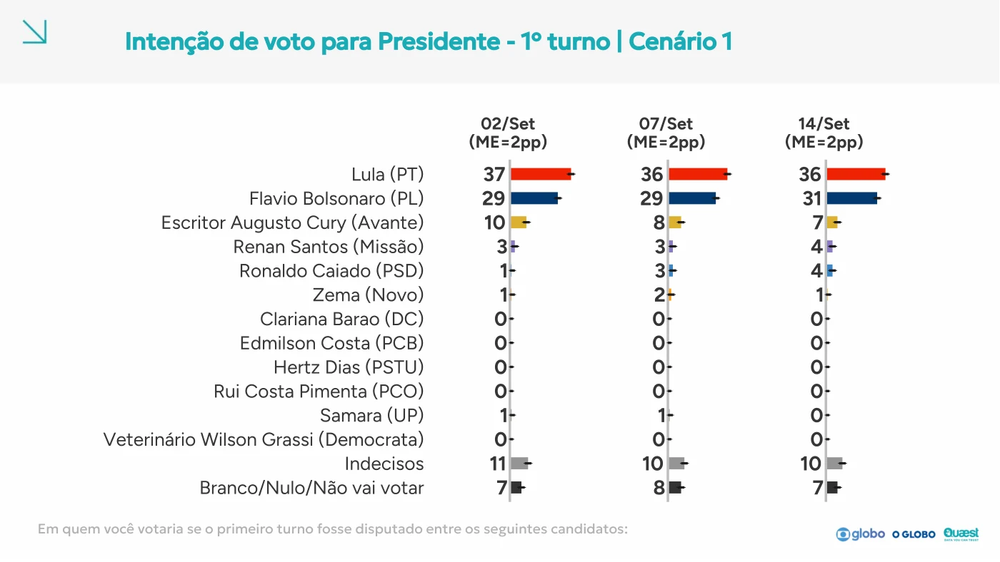
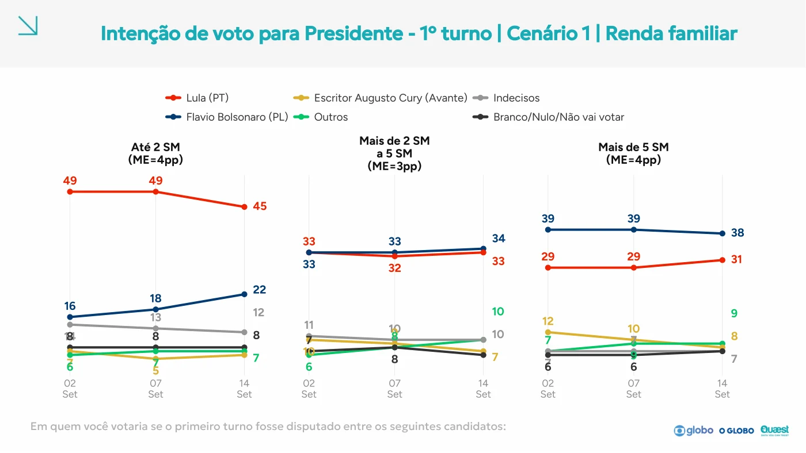
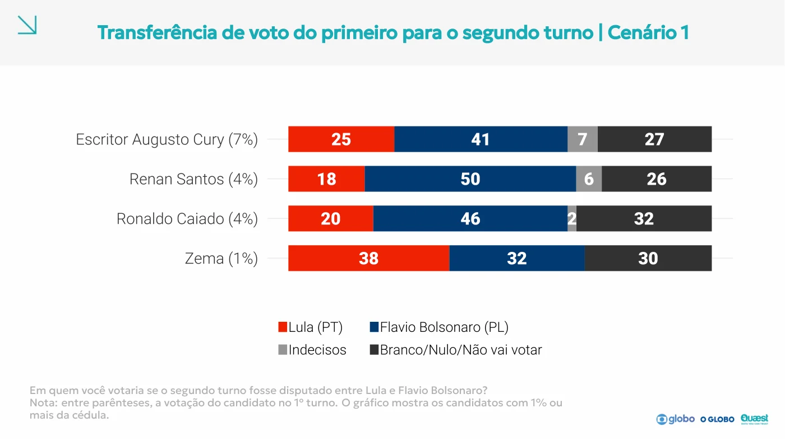
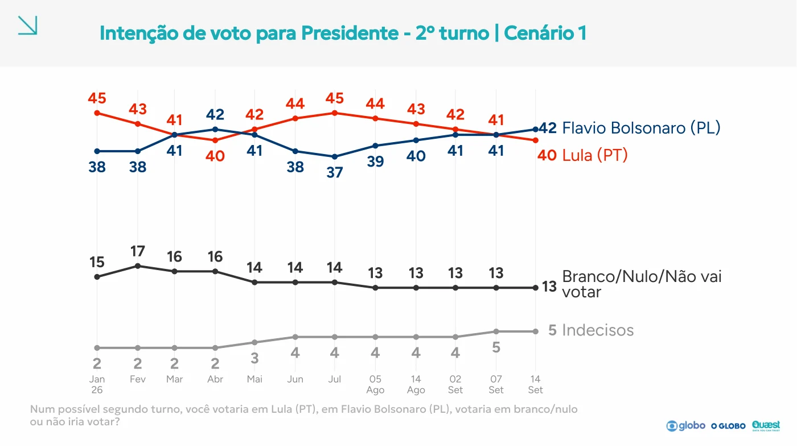
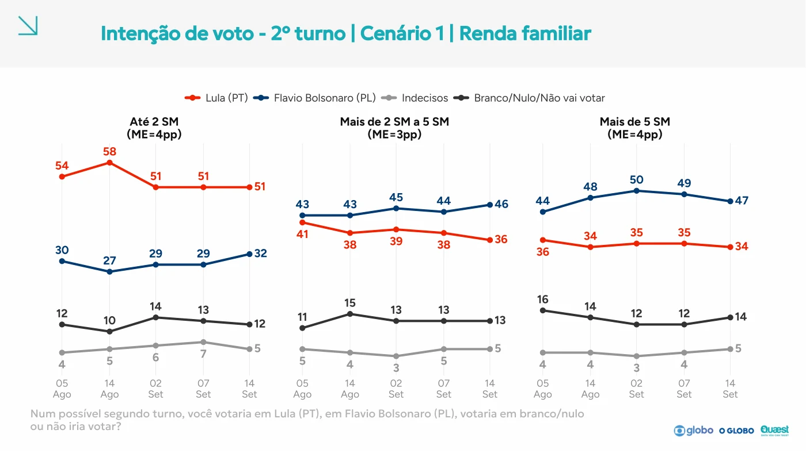
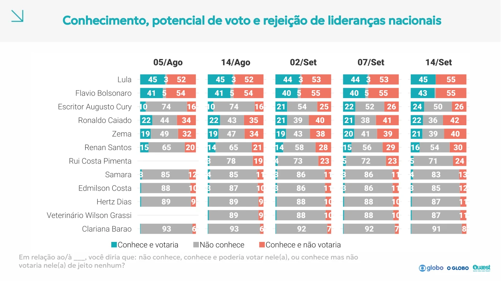
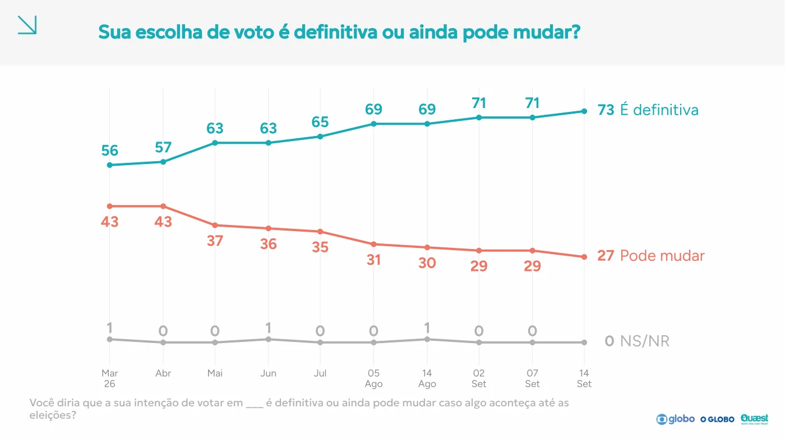
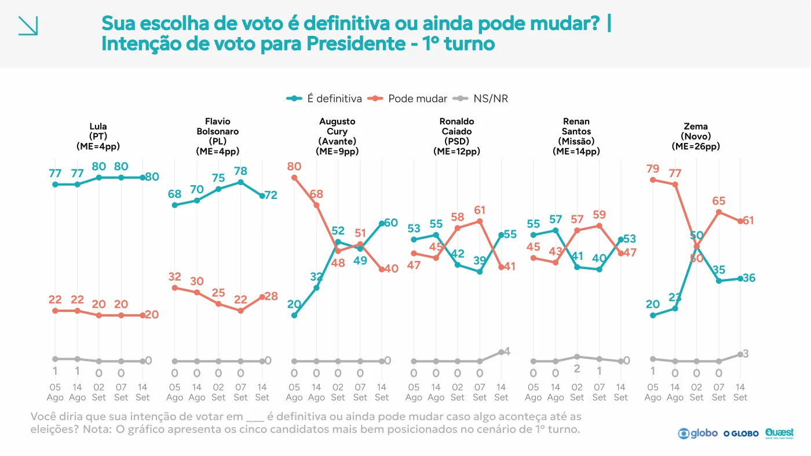
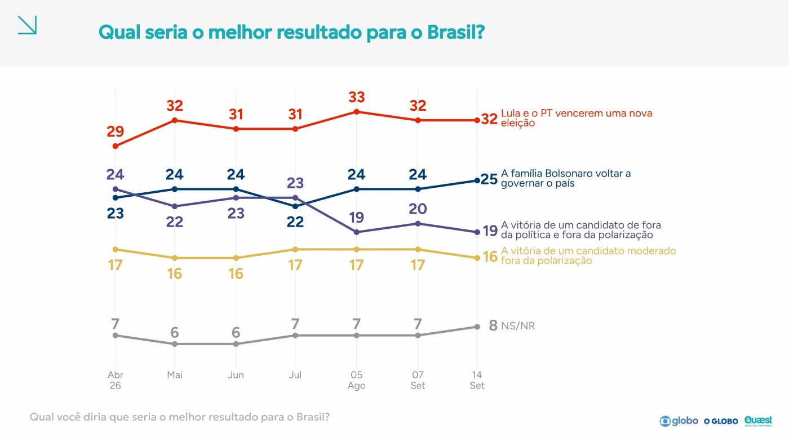
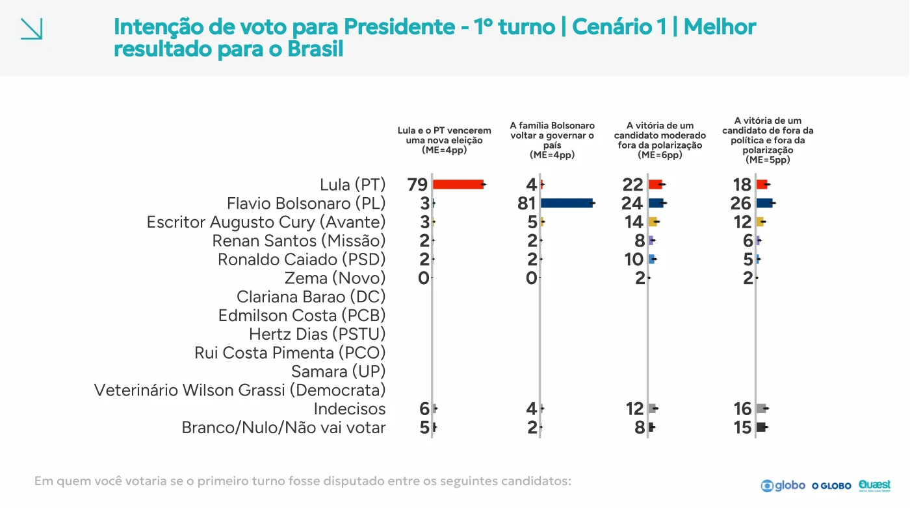
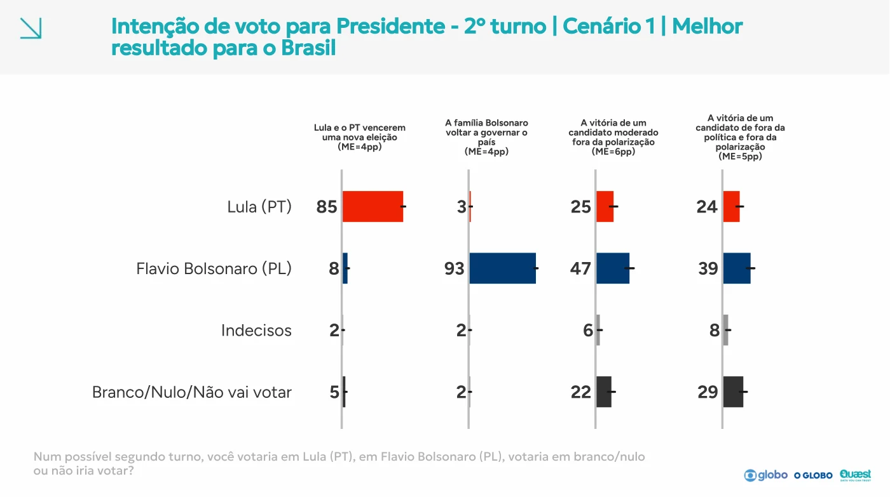
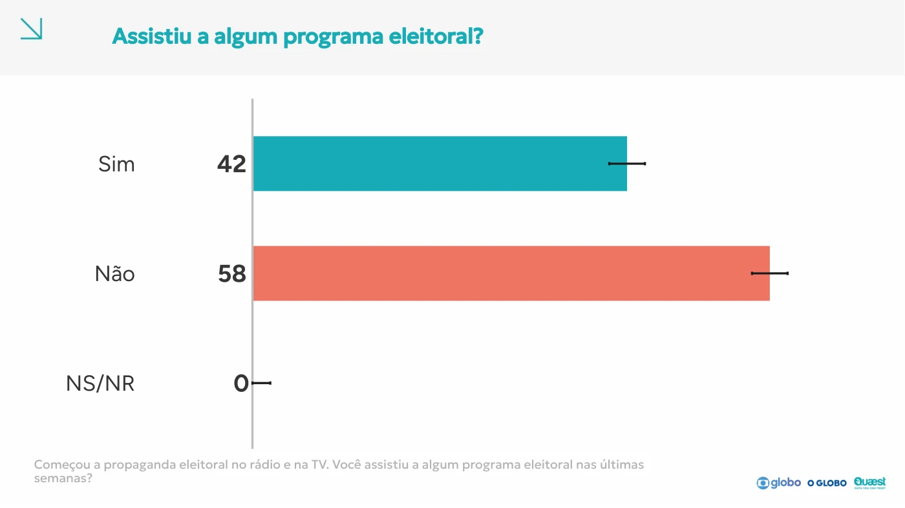
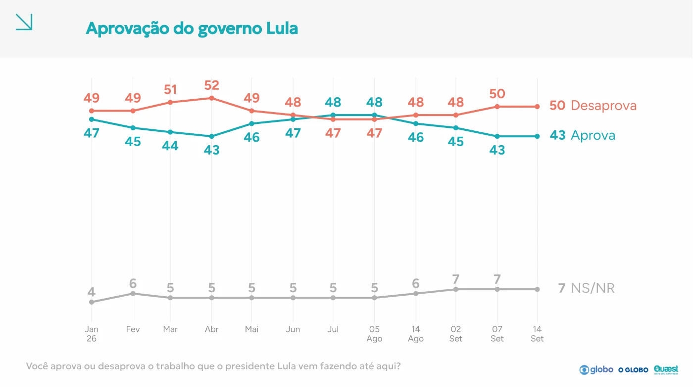
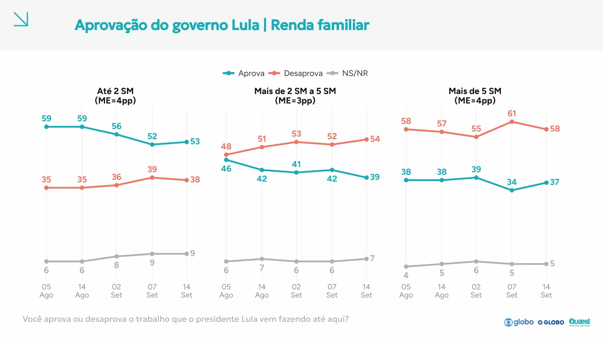
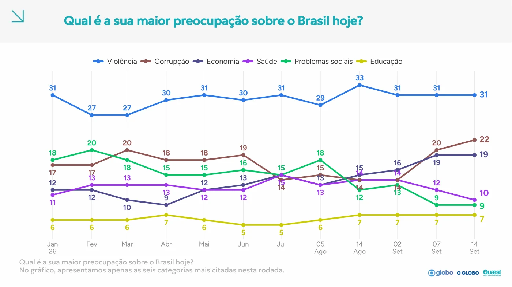
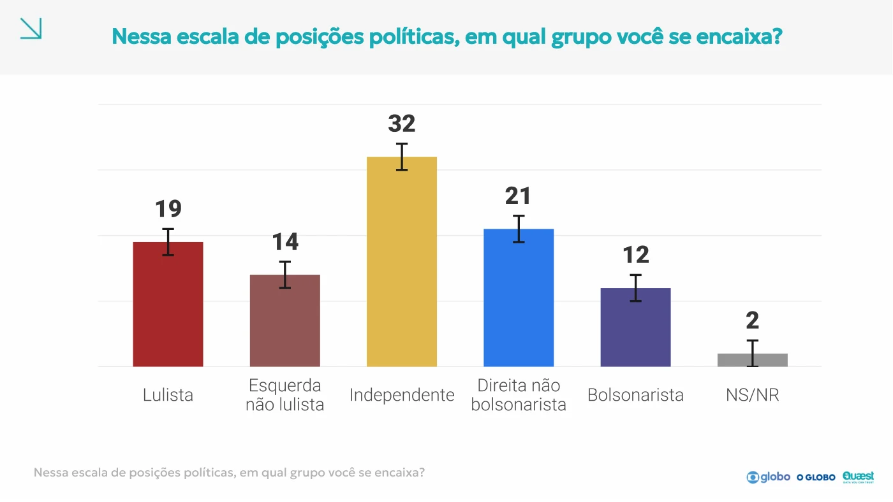
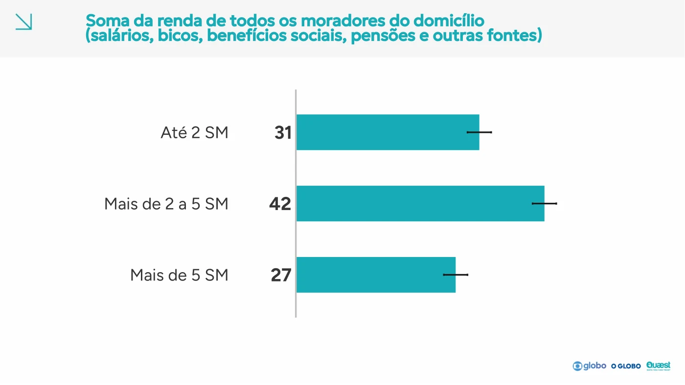
python3 scripts/quaest-140926-audit.py
python3 scripts/reponderacao-pnad.py calcular --hoje 2026-09-15
python3 scripts/reponderacao-build.py
python3 scripts/quaest-140926-build.py
python3 scripts/social-cards.py --only quaest_14092026
pytest -qO script de auditoria lê os PDFs arquivados, verifica as duas extrações territoriais, gera a ficha integral de reponderação e valida o Sankey. O módulo de tabelas preserva transcrições e páginas; o inventário mantém os blocos do questionário. O antigo importador parcial do g1 recusa sobrescrever a fonte integral.
{kind=link}
{kind=link}
{kind=link}
{kind=link}
{kind=link}
{kind=link}
{kind=link}
{kind=link}
{kind=link}
{kind=link}
{kind=link}
{kind=link}
{kind=link}
{kind=link}
{kind=link}
{kind=link}
{kind=link}